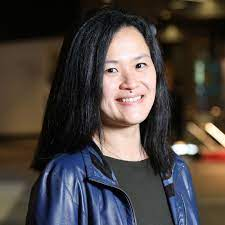
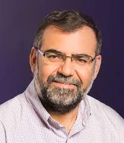

Tentative Speakers
|  | Flora Salim University of New South Wales, Australia Title: TBA Abstract: TBA Bio: Professor Flora Salim is the inaugural Cisco Chair of Digital Transport, University of New South Wales (UNSW) Sydney. Her research is on ubiquitous computing, behaviour modelling, trustworthy and robust AI, and machine learning for multimodal sensor data. She is a member of the Australian Research Council (ARC) College of Experts, an Editor of Proceedings of the ACM on Interactive, Mobile, Wearable, Ubiquitous Technologies (IMWUT), the Associate Editor-in-Chief (AEIC) of IEEE Pervasive Computing, and an Associate Editor of ACM Transactions on Spatial Algorithms and Systems. She is a Chief Investigator of the ARC Centre of Excellence in Automated Decision Making and Society (ADM+S), and the Co-Lead of the ADM+S Machines Program, and the Transport and Mobilities Focus area. More info here. |
|  | Ricardo Baeza-Yates Northeastern University, USA Title: TBA Abstract: TBA Bio: Ricardo Baeza-Yates is currently Director of Research (part-time) at the Institute for Experiential AI of Northeastern University, Silicon Valley campus, since January 2021. He is also a member of the DATA Lab at the Khoury College of Computer Sciences. The rest of the time he does consulting for tech startups, companies and non-profit international institutions, particularly in responsible AI. He is actively involved as expert in many initiatives, committees or advisory boards related to Responsible AI all around the world: Global AI Ethics Consortium, Global Partnership on AI, IADB's fAIr LAC Initiative (Latin America and the Caribbean), Spain's Council of AI, and ACM's US Technology Policy Committee. He is also a co-founder of OptIA in Chile, a NGO devoted to algorithmic transparency and inclusion, and member of the editorial committee of the new AI and Ethics Journal where he co-authored an article highlighting the importance of research freedom on AI ethics. More info here. |
| Akhil Mathur Meta AI London, UK Title: TBA Abstract: TBA Bio: Akhil Mathur works as an AI Research Scientist at Meta AI in London. Previously, he was a Principal Research Scientist and Tech Lead for Machine Learning at Nokia Bell Labs and a Visiting Industry Fellow at the University of Cambridge . He also serve on the Editorial Board of ACM IMWUT journal as an Associate Editor. His research interests are broadly in machine learning, algorithmic fairness, and mobile systems. Currently, he is working on projects involving Federated Learning, Self-Supervised Learning, On-Device ML, and Algorithmic Fairness — all in the context of mobile and embedded devices. In addition, he is also interested in exploring the design of novel ML-driven sensory systems and applications. He is the recipient of the Wolfond Fellowship at the University of Toronto, the mBillionth Award South Asia, and two Best Paper Honorable Mention Awards. More info here. |